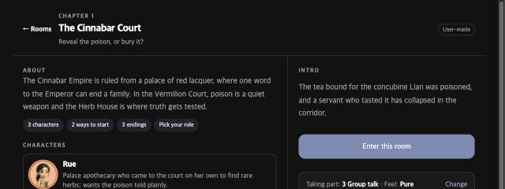

Inkpod
Interactive audio stories that answer when you talk. You talk with AI characters by voice, and the story moves with you. I chose the music, sound effects, and voices, and ran the launch marketing.
What I did
- Launch marketing: posted short videos on six channels and gave each channel its own tracking link to see where people came from. 46 people came to the site, and 1 finished a story.
- Sound: picked the music, sound effects, and voices for each story.
- Now: building my own version with several characters in one "room" and real-time voice conversation. User testing is next.
Screens
